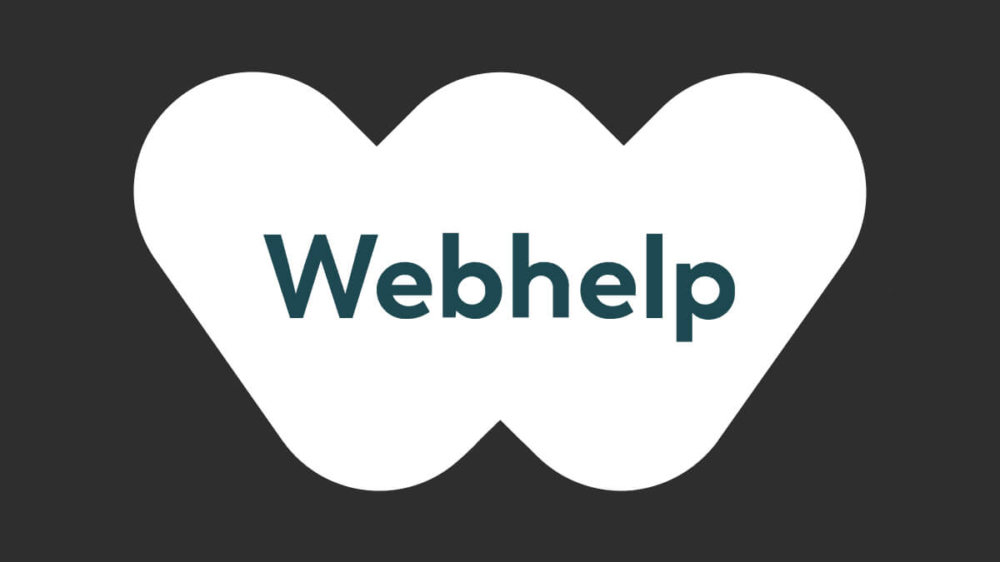
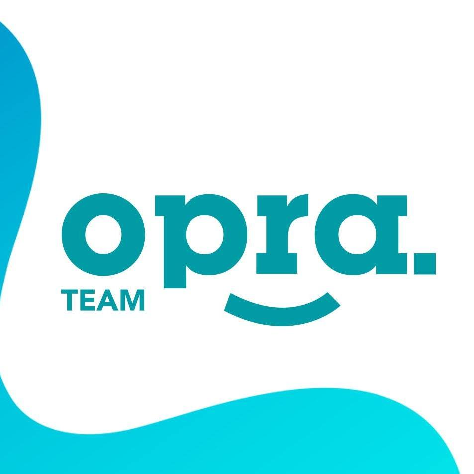
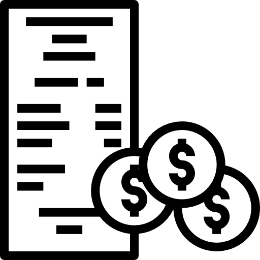

My Work Experiences



< - EMEIA Turkish and English Senior Technical Advisor (February 2020 - Currently Working ) />
< Project Asistant Specialist (May 2018- June 2019) />
< Sports Reporter (September 2017- January 2018) />
- Providing respective technical support activities on call to resolve the technical and application queries, managing escalated issues and performing technical troubleshooting by effectively tailoring communication and style to differing audiences.
- Acting as a first point of contact for customers while effectively researching and grasping technical information across multiple tools while managing and resolving problems in a timely and multi-tasking manner.
- Generating necessary reporting and documentation as well as being a participant in a team of 20 where expertise and knowledge is shared, and feedback is welcomed.
- Organizing Dragon festival for self motivation and team work development with more than 30 institutional companies every year.
- My role is contacting with the human resource and authorized manager employees before and during the organization and manage their festival journey.
- Reporting multiple sport competitions on mobile system simultaneously.
- Was working freelance on aegean area.
My Skills
Technical troubleshooting
Solution development
Sales support
Fluent in English & Turkish
Billing
MS Office
Keynote
QuarkXpress
Pages
Let's work together...
How do you take your coffee?